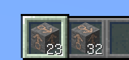

ItemStack
我们在上一节遇到了ItemStack，那么这一节，我们就来详细讲讲ItemStack。
『ItemStack』，直译过来就是『物品堆』。我们在游戏中接触的所有物品，其实都是以ItemStack的形式存在的。

例如上图有『23个铁矿』与『32个铁矿』，他们同属于一个Item，但是却是不同的两个ItemStack。简而言之，他们同属于铁矿，同样拥有『铁矿』这一个物品的属性和行为 (例如硬度、挖掘工具相同)。但他们不是同一堆物品，因为他们占用不同的物品栏空位 (通俗点讲，就是不在同一个格子里)。
也就是说，ItemStack与Item相比，多了数量、NBT标签之类的属性。即ItemStack是Item的一个包装。
如果需要更详细的讲解，可以参阅《Harbinger》。